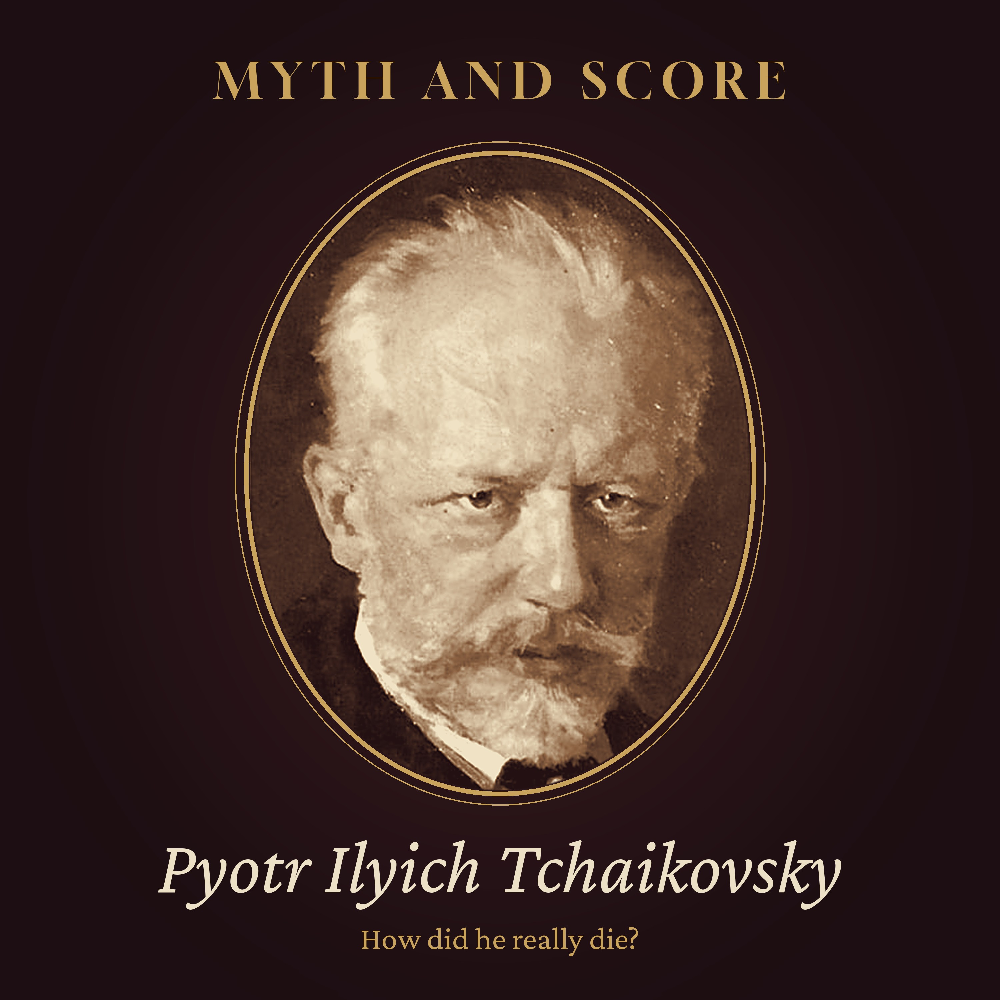

Myth and Score · Episode 4 · 42 min
How Did Tchaikovsky Really Die?
Nine days after he conducted the first performance of his last symphony, Tchaikovsky was dead. His family and four doctors said cholera, caught from a glass of unboiled water in a city where the epidemic was not yet over. Nearly ninety years later, a scholar who had left the Soviet Union brought a darker story to the West: a secret court of his old school friends, a sentence, and arsenic. Tonight we follow both stories through the documents: his mother's death from the same disease, a marriage that lasted weeks, a friendship that lived only in letters, the supper at Leiner's, four days of doctors' bulletins, the open flat on Malaya Morskaya Street, a funeral paid for by the emperor, Alexandra Orlova's chain of witnesses and Alexander Poznansky's reply. His private life is told with facts only. Read by a synthetic voice; script written and fact-checked by the show's team. Chapters: Two stories · A boy from Votkinsk · Music instead of law · A marriage, and a friendship on paper · The capital in the autumn of 1893 · The symphony · Leiner's · Four days · The flat on Malaya Morskaya Street · The funeral · Whispers in the city · The court of honour · A story that travelled · The rebuttal · The doctors' questions · The verdict · Listening again Episode picture: Pyotr Ilyich Tchaikovsky by Nikolai Kuznetsov, 1893 (detail), public domain (Wikimedia Commons). Read by a synthetic voice; script written and fact-checked by the show's team.
The script
On the sixth of November, 1893, the most famous composer in Russia died in his brother's flat in St Petersburg, nine days after he had conducted the first performance of his last symphony.
The newspapers said cholera. Nearly ninety years later, a different story arrived in the West... a secret court, a sentence, and a dose of poison. Since then, people have asked which of the two is true.
Myth and Score. Episode four... How did Tchaikovsky really die?
This episode is read by a synthetic voice. If these stories keep you company, follow the show... it helps others find it.
On this show, we take the most famous stories about great composers and hold them up to the light. Some turn out to be true. Some are half true. And some are told so often that nobody remembers where they began.
Tonight's story is a strange one, because there are two of them. One was told by the composer's family and his doctors, in the week he died. The other was told, much later, by a scholar who had left the Soviet Union, and it was told to her by a man who had heard it from someone else.
To weigh them, we will walk through a childhood in the Urals, a school for young lawyers, a marriage that lasted only weeks, a friendship that lived entirely on paper, a city in the last weeks of an epidemic, a restaurant on the Nevsky Prospect, a flat on Malaya Morskaya Street, and a funeral that filled the centre of the capital.
A word about calendars before we begin. In 1893, Russia still used the old Julian calendar, which ran twelve days behind the one used in the rest of Europe. Russian letters and newspapers of the time give the old dates. Tonight, every date is given in the calendar we use now.
Chapter one. Two stories.
Let us start with the two stories as they are usually told.
The first goes like this. In the autumn of 1893, Pyotr Ilyich Tchaikovsky was in St Petersburg, staying with his younger brother Modest. One evening, or one morning... the accounts differ... he drank a glass of water that had not been boiled. The city had cholera that year, and everyone knew that the water was dangerous. Within hours, he was ill. Within four days, he was dead.
The second story is darker. In this version, Tchaikovsky had become attached to a young man from a noble family. The young man's relative found out, and wrote a letter of complaint, meant for the emperor himself. To prevent a scandal, a group of Tchaikovsky's old classmates from his school days met in secret, as a kind of court of honour. And they told him that there was only one way to save the honour of the school... he must take his own life. A few days later, he was dead, and cholera was the cover story.
The second story has everything a legend needs. A secret, a sentence, a dark symphony, and a death that came too soon.
The question is what the documents say.
Chapter two. A boy from Votkinsk.
Pyotr Ilyich Tchaikovsky was born on the seventh of May, 1840, in Votkinsk, a small town near the Ural Mountains, where his father managed the state ironworks. His mother, Alexandra, was of partly French descent, and the boy was close to her... too close, some of the family thought, for his own peace of mind.
He was a sensitive child. A French governess, Fanny Dürbach, who came to look after the children, remembered him as clever, affectionate, and very easily hurt. She called him a child of glass.
When he was ten, the family took him to St Petersburg, and placed him in the Imperial School of Jurisprudence... a boarding school for the sons of the gentry, which trained young men for careers in the civil service. He would spend nine years there.
And it was during those years that something happened which belongs in tonight's story.
In the summer of 1854, when Pyotr was fourteen, his mother fell ill and died. The illness was cholera.
He never fully recovered from the loss. Years later, he wrote that it had been the greatest grief of his life. Remember it... because forty years later, the same disease would be named as the cause of his own death.
Chapter three. Music instead of law.
In 1859, Tchaikovsky finished his studies and became a clerk in the Ministry of Justice. He was nineteen, and by his own account, he was not a good clerk.
What he loved was music. He had played the piano since early childhood, and he went to the opera whenever he could. In 1862, he joined the new music classes in St Petersburg that grew into the city's conservatory, founded by the pianist Anton Rubinstein. A year later, he left the ministry altogether.
It was a brave choice. A young man of his class did not usually give up a secure post to become a musician.
In 1866, he moved to Moscow, to teach harmony at the new conservatory there. He stayed for more than ten years. In those years, he wrote his first symphonies, the first piano concerto, and the ballet Swan Lake. By the late 1870s, his opera Eugene Onegin and his fourth symphony were finished, and his name was beginning to travel.
By the time he was fifty, he was the most celebrated composer in Russia. He had conducted his music across Europe, and in 1891, he crossed the Atlantic to conduct at the opening of a new concert hall in New York... the hall we now call Carnegie Hall.
In 1890, his opera The Queen of Spades had its first performance at the Mariinsky Theatre in St Petersburg. In 1892, The Nutcracker followed, on the same stage. And in the summer of 1893, the University of Cambridge gave him an honorary doctorate of music, in a ceremony in England, in robes of scarlet and white.
The emperor, Alexander the Third, admired his work, and had given him a pension for life.
That matters to our story. In 1893, Tchaikovsky was not an outsider. He was one of the most honoured men in the empire.
Chapter four. A marriage, and a friendship on paper.
There are two women who appear in almost every telling of Tchaikovsky's life, and both deserve to be spoken of carefully.
The first is Antonina Milyukova. She had been a student at the Moscow Conservatory, and in the spring of 1877, she wrote him letters declaring her love. That summer, on the eighteenth of July, 1877, they were married in a church in Moscow.
It went wrong almost at once. Within a few weeks, Tchaikovsky had fled, first to his family, and then abroad. The two never lived together again, though they never divorced. Antonina's later years were unhappy, and she spent her last two decades in a psychiatric hospital. Most biographers now see her as someone who was badly hurt by a marriage that should never have taken place.
Why did he marry at all? Most scholars today believe that Tchaikovsky's deepest attachments were to men, and that he hoped a marriage would quiet the talk around him, and perhaps please his family. His letters to his brothers, many of them published in full only after the fall of the Soviet Union, make this clear enough. It is part of his life, and it is part of tonight's question. But it should be said plainly, and without sensation.
One more detail from that autumn belongs here. Nikolai Kashkin, a friend and colleague from the Moscow Conservatory, wrote in his memoirs, published soon after the composer's death, that in the weeks after the wedding Tchaikovsky had walked into the cold Moskva River, hoping to fall ill. Kashkin is the only contemporary who tells this story, and scholars still debate how far to trust it. But those who believe in the court of honour often point to it.
The second woman is Nadezhda von Meck, a wealthy widow, the owner of a great railway fortune, and a lover of music. In the same years, from the late 1870s, she gave Tchaikovsky a generous yearly allowance, so that he could leave his teaching and compose. They wrote to each other more than a thousand letters. And by their own agreement, they never met. Once or twice, by accident, they passed each other... and turned away.
In 1890, she ended the allowance, and the letters stopped. It hurt him deeply. But by then, he no longer needed the money.
Chapter five. The capital in the autumn of 1893.
Now let us go to the city where he died.
St Petersburg in 1893 was the capital of the Russian Empire, a city of about a million people, built on islands and marshes at the mouth of the river Neva. It was a city of palaces and canals... and of water that was not safe to drink.
Cholera had come back to Russia in 1892, in one of the great epidemics of the nineteenth century. Hundreds of thousands of people across the empire fell ill in the years that followed. In the capital, the disease returned in the summer of 1893, and it was still there in the autumn.
The city knew what to do, or thought it did. Notices told people to boil their water. Restaurants were told to serve only boiled water. Doctors knew by then that the illness came from something in the water... the bacterium had been identified in the 1880s... though not every citizen believed it.
By October, with the cold weather, the number of new cases was falling. But it had not stopped. Through that month, sick people were still being taken to the city's hospitals. And while most of the dead were the poor, people of every class still caught it.
It is worth knowing what cholera does, because the details will matter later. It is not a slow illness. The bacterium lives in dirty water, and once it is swallowed, it attacks the gut. The body loses water... litres of it in a single day. The skin turns cold and grey and wrinkled, as if the person has aged years in hours. Without the right treatment, which nobody had in 1893, about half of those who fell ill died, often within days.
And there was one more stage that doctors of the time feared. Some patients seemed to recover from the first attack, and then their kidneys stopped working. It was often that second stage which killed them.
That is the city Tchaikovsky came back to, in October 1893.
Chapter six. The symphony.
He had finished his sixth symphony that summer, at his house in Klin, outside Moscow. He believed it was the best thing he had ever written. In letters, he said that he had put his whole soul into it.
On the twenty-eighth of October, 1893, he conducted its first performance in St Petersburg, in the hall of the Assembly of the Nobility.
The audience was polite, and a little puzzled. The symphony does not end in triumph, as symphonies were expected to. It ends with a slow movement that fades, very quietly, into silence.
According to Modest, it was the next morning that the two brothers chose its title. Pyotr had wanted a name that would hint at its feeling, without telling the listener what to think. Modest suggested a word... in Russian, Pateticheskaya... a word that means full of passion and suffering, not pitiful. In the West, it would become known by its French form, the Pathétique.
After his death, that quiet ending would be heard in a new way. People said he had written his own Requiem. It is an idea that fits beautifully with the second story.
But it is worth noticing that in the days after the premiere, Tchaikovsky was making plans. He was correcting proofs. He was arranging concerts for the coming season, and talking about new work. Friends who saw him that week described him as cheerful.
Chapter seven. Leiner's.
On the evening of the first of November, Tchaikovsky went to the theatre with friends and family. They saw a play by Alexander Ostrovsky. Afterwards, the party went on to supper at Leiner's, a restaurant on the Nevsky Prospect, the great avenue at the centre of the city, not far from Modest's flat.
And here the story of the glass of water begins.
There are two versions of it, and both come from people who were there, or close to it. In one, told in some of the newspapers, Tchaikovsky asked for a glass of water at the restaurant that night, and was told that there was no boiled water. He said to bring it unboiled, and drank it.
In the other, told by Modest in his account of his brother's last days, the evening passed quietly. The next morning, at the flat, Pyotr felt unwell. He did not want to eat. At lunch, he poured himself a glass of water, unboiled, and drank it, while the others tried to stop him.
The difference matters less than it seems. Cholera can take anything from a few hours to a few days to show itself. Whatever he drank, and wherever he drank it, either version fits the illness that followed.
But the difference matters to the second story. Those who believe in the court of honour say that a glass of unboiled water, drunk in front of witnesses in a city with cholera, is exactly what a man would do who had already decided to die... or what a family would invent to explain a death.
Chapter eight. Four days.
By the afternoon of the second of November, Tchaikovsky was seriously ill.
Modest sent for a doctor. Vasily Bertenson, a family friend, came first. That evening, his brother arrived... Lev Bertenson, one of the most respected physicians in the capital, a doctor to the court. Two more doctors, Nikolai Mamonov and Alexander Zander, came to help during the days that followed. The four men worked in turns, day and night.
The diagnosis was cholera. The symptoms were those of the disease... violent sickness, cramps, a body losing its water faster than anyone could replace it.
For a day or two, he seemed to improve. The cramps eased. But then his kidneys began to fail. The doctors tried a warm bath, a treatment of the time, used when the kidneys stopped. It did not help.
During these days, bulletins about his condition were written by the doctors and put up at the door of the building, and the newspapers printed them. Crowds gathered in the street outside, waiting for news.
In the last hours, a priest was called. By then, Tchaikovsky was no longer conscious.
He died at about three o'clock in the morning, on the sixth of November, 1893. He was fifty-three years old.
Chapter nine. The flat on Malaya Morskaya Street.
What happened next has become one of the strongest arguments of those who doubt the official story.
Modest's flat was at number thirteen, Malaya Morskaya Street, a quiet street close to St Isaac's Cathedral. After the death, Tchaikovsky's body was laid out there, and the doors were opened. For two days, a stream of people came to pay their respects... friends, musicians, students, strangers. Prayers were said beside the body.
And some of the visitors, according to the accounts of the time, kissed the dead man's face or hands.
The composer Nikolai Rimsky-Korsakov, who came to the flat, wrote years later in his memoirs that he found it strange. If this was cholera, he asked, how could so many people be allowed to come so close?
It is a good question. Under the strict rules of the time, the body of a cholera victim was supposed to be sealed in a closed coffin, and taken away quickly.
But there is an answer, and it is in the documents too. A newspaper report from those days describes the body covered with a fine, transparent cloth, and someone at the bedside wiping the lips and nostrils with a cloth soaked in disinfectant. By the autumn of 1893, the medical authorities had also eased some of the rules, allowing the funeral rites of the church to be held for cholera victims. And doctors of the time knew that cholera does not pass easily from a dead body to the living. It passes through what a sick person leaves behind, and through water.
So the open flat was unusual, and perhaps careless. But it was not impossible.
Chapter ten. The funeral.
The funeral was held on the ninth of November, 1893.
It was not an ordinary funeral. The emperor, Alexander the Third, gave permission for the service to be held in the Kazan Cathedral, one of the great churches of the capital, on the Nevsky Prospect. It was an honour rarely given to a private citizen. The emperor also paid for the funeral from his own funds.
The crowds were enormous. According to reports of the time, tens of thousands of people asked for tickets to the service. The cathedral was filled far beyond its usual size, and many thousands more lined the streets as the coffin was carried to its resting place. Tchaikovsky was buried in the Tikhvin Cemetery, at the Alexander Nevsky Monastery, where many of Russia's great artists lie.
The procession moved slowly along the Nevsky Prospect, the same avenue where he had eaten his last supper, to the monastery at its far end. Wreaths were carried from theatres, orchestras, schools and cities across Russia.
Think about what this means for our two stories.
If Tchaikovsky had been driven to his death to hide a scandal, the state and the church gave him the grandest farewell a composer had ever had in Russia. That is possible, of course. A scandal that nobody knew about could be buried with full honours. But it does not fit easily with a story in which the emperor's own circle wanted him gone.
Twelve days later, on the eighteenth of November, the sixth symphony was played again in St Petersburg, at a concert in his memory, conducted by Eduard Nápravník. This time, the audience understood it. Many people wept.
Chapter eleven. Whispers in the city.
The rumours began almost at once.
That is not surprising. A famous man had died, suddenly, at the height of his fame, of a disease that most people thought belonged to the poor. Why had he drunk unboiled water, when everyone knew better? Why had the doctors let the public into the flat?
Some people whispered that he had drunk the water on purpose. Others blamed the doctors, and said that they had treated him badly. Lev Bertenson felt he had to defend himself, and he published his own account of the illness in a newspaper, describing what he had seen and what he had done.
Modest, too, wrote his account of the last days, first for the newspapers and later in his long biography of his brother.
Here is the important thing. The whispers of the 1890s were about carelessness, and perhaps about despair. Nobody, as far as the surviving documents show, spoke of a court of honour. That story would come much later.
Chapter twelve. The court of honour.
In 1979, a Russian musicologist named Alexandra Orlova left the Soviet Union and settled in the United States. She had spent decades working on Tchaikovsky's letters and diaries in the Soviet archives. She knew the documents well.
She brought a story with her. It appeared in English in 1981, in an article in the British journal Music and Letters, called Tchaikovsky... the last chapter. Its outline had already been reported in the West a year or two before.
Here is the chain of her story, link by link.
In the 1960s, she said, she had been told it by Alexander Voitov, a man who had studied the history of the School of Jurisprudence. Voitov said he had heard it many years before from Elizaveta Jacobi, the widow of Nikolai Jacobi, one of Tchaikovsky's classmates at the school, who had later become a senior official in the law courts of the empire.
According to the widow, in the autumn of 1893, a nobleman, Stenbock-Fermor, was troubled by the attention Tchaikovsky was paying to a young relative of his. He wrote a letter of complaint, to be passed to the emperor. The letter came first into the hands of Jacobi. To avoid a scandal that would disgrace the school and all its old pupils, Jacobi called together a group of former classmates... seven or eight men... and they met in his study for several hours. When Tchaikovsky came out, pale and shaken, he had agreed to their verdict. He would die, and the letter would never reach the emperor. A day or two later, the story goes, the news came that he was ill.
Orlova suggested that the court might have met on the thirty-first of October, a day for which, she said, we know almost nothing of Tchaikovsky's movements until the evening. And she suggested that the poison was arsenic, which could have caused symptoms like those of cholera.
Notice what kind of evidence this is. It is not a letter, or a diary, or a record from the time. It is a memory of a memory... a story told by a widow, many years after the event, to a young man, who repeated it, many decades after that, to a scholar, who published it in the West, nearly ninety years after the death.
There is a small, dry irony here. The story is about a court... a gathering of trained lawyers. And yet no lawyer would accept its evidence. In a court of law, a widow's memory, repeated by a second man, repeated by a third, would be called hearsay, and set aside.
That does not make it false. But it means that none of it can be checked against the people who were there.
Chapter thirteen. A story that travelled.
Even so, the story spread fast.
In 1980, the New Grove Dictionary of Music and Musicians, the great reference work for music in English, published a long article on Tchaikovsky. Its author, the British scholar David Brown, took Orlova's account seriously, and the article presented suicide as a strong possibility. Other books followed. Some biographers accepted the court of honour as fact. Programme notes began to mention it. The Pathétique became, for many listeners, a suicide note in music.
It is easy to see why the story was so attractive. In the Soviet Union, Tchaikovsky's love for men had been hidden for decades. His letters had been cut, and parts of them kept out of print. When the West heard that the Soviet version of his life had been censored, it was natural to suspect that the Soviet version of his death had been censored too.
And there is something else. The story turned the end of a great composer's life into a tragedy with a meaning. A glass of water is an accident. A secret sentence is a drama.
But a story that feels right is not the same as a story that is right. And within a few years, a careful reader of the documents set out to test it.
Chapter fourteen. The rebuttal.
His name was Alexander Poznansky. He had grown up in the Soviet Union, and had come to the United States in the late 1970s, where he became a librarian and historian at Yale. He spent years with the sources... the letters, the diaries, the newspapers of November 1893, the memoirs of everyone who was there.
In 1988, he published a long article in the American journal Nineteenth-Century Music, called Tchaikovsky's Suicide... Myth and Reality. Later came his biography of Tchaikovsky in 1991, and in 1996, a book called Tchaikovsky's Last Days, a day-by-day collection of every document that survives from the final weeks.
His arguments, put simply, were these.
First, the chain of witnesses. Every link in Orlova's story is second-hand or worse, and the first link, the widow, spoke many years after the event.
Second, the details. There was a Stenbock-Fermor family, but the man in the story is sometimes called a duke, and there was no duke of that name... only counts. The details of who complained, and to whom, shift between tellings.
Third, the danger. Poznansky argued that Tchaikovsky's private life was not a secret among the people who mattered. In the upper circles of St Petersburg in the 1890s, such attachments were known about, and quietly tolerated, among men of rank and fame. The law against them existed, but it was hardly ever used against such men. A letter of complaint was an embarrassment. It was not a death sentence. And the emperor was among Tchaikovsky's admirers.
Fourth, the days themselves. The record of the last week, he showed, is full of plans, meetings and letters. There is no gap in it that clearly needs a secret court to fill it.
And fifth, the illness. Its course, as the doctors described it at the time, matched cholera, day by day.
Poznansky's conclusion was firm. He found no factual evidence that Tchaikovsky died of anything other than cholera.
He was not alone. Other scholars, among them the American musicologist Richard Taruskin, wrote sharply against the court of honour. And in later editions of the great reference books, the articles were changed. Suicide was no longer presented as the likely answer. It became one theory among several, and the weaker one.
Orlova, for her part, never gave up her story. She defended it for the rest of her life. And she had done real and lasting work on Tchaikovsky's letters and diaries, work that scholars still use. It is possible to be a careful scholar of documents... and still be wrong about a story that never had a document behind it.
Chapter fifteen. The doctors' questions.
Since then, doctors and historians have gone over the medical record many times.
The case against cholera rests mostly on a few questions. Why did Tchaikovsky drink the water? Why was the illness so quick, or why was it not quicker? Why the open flat? And why did one of the doctors, Vasily Bertenson, later admit that he had never before seen a case of cholera with his own eyes?
The case for cholera rests on the description itself. The bulletins, written at the bedside, follow the stages of the disease as doctors of the time knew them... the first violent stage, a short apparent recovery, then the failure of the kidneys that so often ended it. Four experienced physicians saw the patient. None of them, then or later, said that they suspected poison.
And arsenic is not an easy fit. It can cause sickness that looks a little like cholera at first. But many medical writers have argued that it would be very hard for a poison to copy the whole course of the disease over four days, under the eyes of four doctors, without one of them noticing something wrong.
There was no autopsy. The body was not examined after death, and it has never been exhumed. So, as with Mozart, there will be no final proof from the body itself.
What there is, is a long trail of paper. And the paper, read carefully, points one way.
Chapter sixteen. The verdict.
So what is left, when we hold the myth up to the light?
We have a man who lost his mother to cholera as a boy, and who came, forty years later, to a city where cholera was still present. We have two slightly different accounts of a glass of unboiled water. We have four doctors, who described an illness that matched cholera at every stage. We have bulletins written at the door while he was dying, a public funeral paid for by the emperor, and a family who told the same story in public and in private.
On the other side, we have the open flat, which was unusual, but can be explained. We have a symphony with a quiet, sorrowful ending, which was written months before, and which its composer was already planning to conduct again. And we have a story of a court of honour, which reached the world nearly ninety years after the death, through a chain of people who had not been there, and which no letter, diary or record from 1893 confirms.
So, how did Tchaikovsky really die?
The weight of the evidence favours cholera. The court of honour rests on late, second-hand testimony, and its details do not hold up well when they are checked.
But it is fair to say that the debate has not entirely ended. A few writers still believe that he took his own life, whether ordered to or not. Some ask whether he was careless with the water on purpose, in a moment of despair. These are questions about a man's inner life, and the documents cannot fully answer them. They can only tell us that there is no good evidence for a secret sentence... and good evidence for a disease that was in the city that autumn, and that killed thousands of others.
The myth, though, is true in a different way. It is true about the silence that surrounded his private life, for more than a century after his death. When a life has been partly hidden, people will always suspect that its ending was hidden too.
Chapter seventeen. Listening again.
There is one more thing worth saying.
For many years, the Pathétique was heard through the story of his death. The quiet last pages became a farewell, a confession, even a suicide note. It is a powerful way to hear it.
But Tchaikovsky did not know, when he wrote those pages, that he would be dead in the autumn. He wrote them in the spring and summer, at his house in Klin, as a man at the height of his powers, who had found a new way to end a symphony... not with a march or a triumph, but with sorrow, slowing down until it is gone.
He was proud of it. He was already thinking about what he would write next.
Perhaps the fairest thing we can do for him is to hear the symphony as he made it... not as the last chapter of a mystery, but as the last great work of a man who, as far as the documents can tell us, still had plans for the coming season.
This has been Myth and Score. The sources for tonight's episode are in the notes.
The symphony still ends as he wrote it... very softly, and then, nothing more.
Also from the late hours: Embers of History · Slow Orbit · The Quiet Armoury